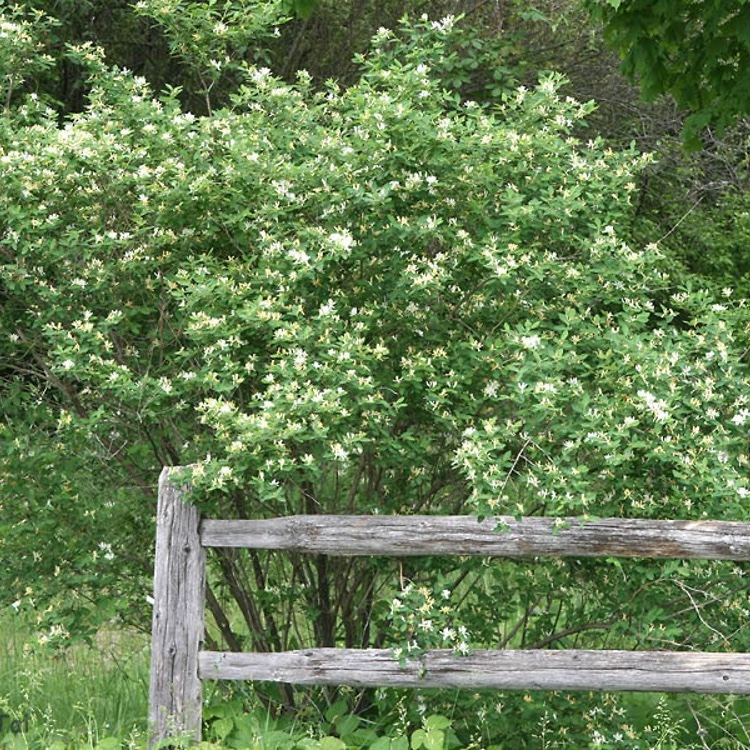

Morrow Honeysuckle
About
 Morrow's honeysuckle is a deciduous shrub native to Japan, Korea, and northeastern China. It was introduced to North America as a decorative plant and in soe areas, for soil erosion control, but has since become an invasive species. It can be found in Ohio in forests, woodlands, old feilds, and along roadsides. It grows rapidly in large, shaded thickets.
Morrow Honeysuckle is incredibly adpatable to adverse conditions, and can grow almost anywhere, making it a very effective invasive species. It grows in tight thickets, shading out lower growing plants to take over entire areas. It does not need much sun, water, or nutrients to thrive, as its thin trunks allow it to grow quickly and interconnected root systems allow entire colonies to survive on limited recources. In addition, it is almost impossible to remove as it resprouts very quickly from any leftover roots or stumps.
Identification
Morrow Honeysucklle thickets grow between 6 and 12 feet tall, making it one of the smaller species of honeysuckle. It grows in very dense interconnected clumps. Its leaves are small and oblongm and its trunks are skinny and gray. It is edible to birds and rodents, but toxic to humans and domesticated animals. It bools late spring to early summer, and produces sweet smelling flowers.